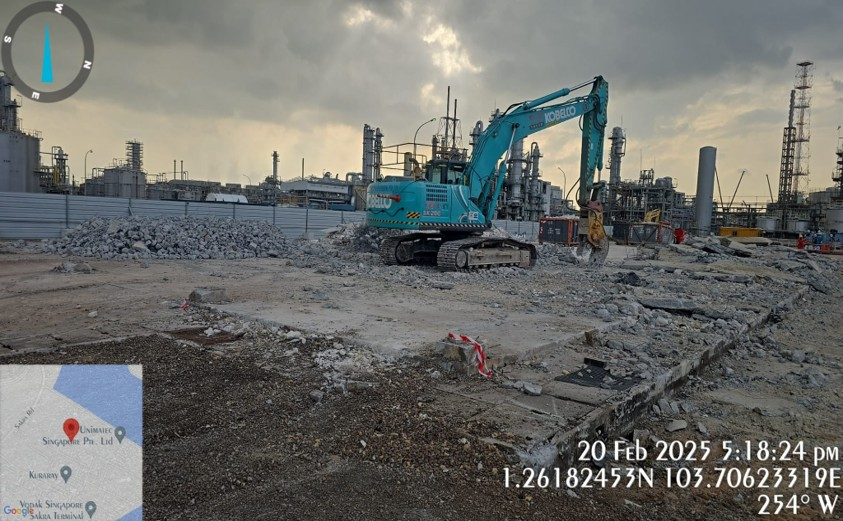
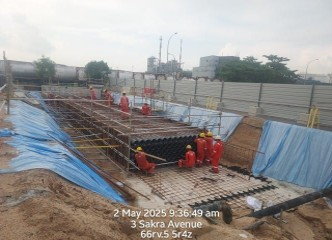

Direct access
Contact with zero ambiguity.
Toyah’s live homepage makes office address, phone, fax, and email immediately visible. This version keeps that directness and adds a simple demo inquiry form for layout testing.

Office details
Reach Toyah fast.
Use this panel for immediate action. Replace the demo form backend later with your preferred email, CRM, or CMS workflow.
Careers + enquiry
Multiple conversion paths.
Careers
Join the team.
The live site includes Careers, Enquiry, and Contact Us links near the top. This card gives each of those paths more intentional visual weight.
General enquiry
Start a conversation.
Use for quote requests, project introductions, procurement questions, or capability submissions.